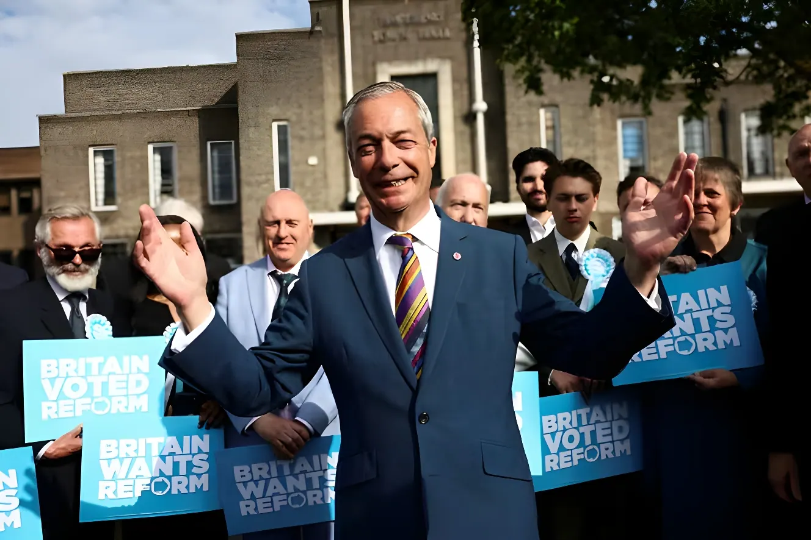

Le 7 mai 2026, plus de 5 000 sièges de conseillers locaux étaient en jeu dans 136 collectivités d'Angleterre, en même temps que se tenaient les élections au Parlement écossais et au Senedd gallois. Le résultat a constitué un choc politique majeur : Reform UK, parti populiste de droite dirigé par Nigel Farage, a conquis plus de 1 400 sièges, tandis que le Labour perdait plus de 1 100 conseillers et 38 conseils. La défaite a immédiatement déclenché une crise de leadership sans précédent autour du Premier ministre Keir Starmer.
Ces élections locales du 7 mai 2026 constituaient le second grand test électoral du gouvernement Starmer, arrivé au pouvoir lors du raz-de-marée travailliste de juillet 2024. Depuis lors, la popularité du Labour avait connu une chute spectaculaire, alimentée par une série de controverses : la suppression de l'allocation hivernale de chauffage en pleine crise du coût de la vie, la hausse des cotisations patronales, les changements à la fiscalité successorale agricole, et surtout le scandale de la nomination de Peter Mandelson comme ambassadeur aux États-Unis — un proche de Jeffrey Epstein contraint à la démission. Les sondages plaçaient Reform UK en tête de l'intention de vote nationale depuis plusieurs mois.
Le scrutin revêtait une dimension particulièrement ample : 136 conseils anglais étaient concernés — les 32 arrondissements londoniens, 32 bourgs métropolitains, 18 autorités unitaires, 6 conseils de comté et 48 conseils de district — auxquels s'ajoutaient 6 élections de maires directement élus en Angleterre. Le même jour, les électeurs écossais choisissaient leur Parlement à Holyrood et les Gallois renouvelaient leur Senedd. L'ensemble formait un panorama exceptionnel de la démocratie britannique dans sa complexité institutionnelle.
En Angleterre, Reform UK a réalisé une percée historique, gagnant plus de 1 400 sièges — quasiment depuis zéro, le parti étant pratiquement absent des conseils locaux avant ce scrutin. Le parti de Nigel Farage a conquis le contrôle d'une dizaine de conseils et s'est imposé comme la première force dans de nombreux bourgs métropolitains où il a remporté tous les sièges lors d'élections générales de conseil. Il a réalisé ses meilleurs résultats dans les zones ayant fortement voté pour le Brexit, ainsi que dans les anciennes bastions travaillistes du nord de l'Angleterre — Hartlepool, Burnley, Newcastle-under-Lyme — signalant que la reconquête du « mur rouge » par Labour en 2024 pourrait n'être que temporaire.
Le Labour, de son côté, a subi des pertes dévastatrices. La formation a perdu le contrôle de plus de 38 conseils et environ 1 500 conseillers ont été défaits. À Londres, le parti a été particulièrement maltraité : il a perdu le contrôle de Lambeth et Lewisham au profit des Verts, et cédé Southwark dans les dernières heures de dépouillement. Camden a été conservé, mais au prix de la perte de 16 sièges. Sur neuf arrondissements londoniens restants, aucun parti n'a obtenu la majorité absolue.
Les résultats tombent : Reform UK s'impose comme première force de l'élection, les Verts remportent Hackney et Lewisham. Labour perd 38 conseils. Starmer reconnaît des résultats « vraiment difficiles ».
L'ancienne ministre Catherine West annonce qu'elle lancera une candidature contre Starmer si aucun membre du cabinet ne le défie. Elle réclame un « calendrier de départ ordonné ».
Starmer tient une conférence de presse présentée comme sa « dernière chance de sauver sa présidence ». Quatre conseillers parlementaires démissionnent dans l'heure qui suit. Environ 80 députés travaillistes demandent son départ.
Wes Streeting démissionne du portefeuille de la Santé. Le secrétaire d'État déclare que Starmer « ne conduira pas le Labour aux prochaines élections générales ». Réunion du cabinet : aucun défi formel n'est lancé.
92 députés travaillistes demandent officiellement à Starmer de fixer une date de départ. 111 autres signent un soutien au Premier ministre. Starmer se dit déterminé à rester jusqu'aux prochaines législatives.
Au-delà de la vague Reform, le scrutin a confirmé la montée en puissance des partis tiers. Les Verts ont réalisé leur meilleure performance électorale locale, gagnant plus de 300 sièges et remportant trois conseils dont Hackney et Lewisham à Londres. Le parti, désormais dirigé par Zack Polanski, s'affirme comme une alternative crédible au Labour sur sa gauche, particulièrement dans les métropoles. Dans certaines circonscriptions comme Reading et Plymouth, les Verts ont devancé le Labour en nombre de voix, signe d'un réalignement structurel à gauche de l'échiquier.
Les libéraux-démocrates ont quant à eux gagné plus de 150 sièges et remporté trois conseils, dont les deux nouveaux conseils unitaires du Surrey (East Surrey et West Surrey), nés de la réorganisation administrative conduite par le gouvernement. Ces gains, plus modestes en apparence, s'inscrivent dans une stratégie de conquête des banlieues aisées du Sud de l'Angleterre déjà visible lors des législatives de 2024.
Le 7 mai était également le jour des élections au Parlement écossais (Holyrood). Le Parti national écossais (SNP) a remporté une cinquième victoire consécutive, obtenant 58 sièges — sans toutefois atteindre la majorité absolue. Scottish Labour et Reform UK Scotland ont terminé à égalité en deuxième position. Les Verts écossais ont obtenu 15 sièges, les Conservateurs 12. Dix sièges sont revenus à des candidats indépendants. Le chef de Scottish Labour, Anas Sarwar, avait publiquement demandé la démission de Starmer avant le scrutin, estimant que son leadership constituait une « distraction » néfaste pour la campagne en Écosse.
C'est au Pays de Galles que le bouleversement a été le plus symboliquement fort. Pour la première fois depuis un siècle, le Labour gallois a perdu sa domination sur le Senedd. Le parti nationaliste gallois Plaid Cymru a remporté 43 sièges, devenant la première force du parlement gallois, tandis que Reform UK Wales en obtenait 34. Le Welsh Labour a été relégué à la troisième place — et la Première ministre sortante Eluned Morgan a perdu son propre siège, un fait sans précédent pour un chef de gouvernement en exercice. Cette défaite signifie désormais que les trois nations du Royaume-Uni hors Angleterre — Écosse, Irlande du Nord et désormais Pays de Galles — sont gouvernées par des partis nationalistes ou pro-indépendance.
| Parti | Sièges gagnés (Angleterre) | Sièges perdus | Conseils |
|---|---|---|---|
| Reform UK | +1 400 | — | ~10 remportés |
| Labour | ~1 000 | −1 496 | 38 perdus |
| Conservateurs | — | −500+ | 6 perdus |
| Verts | +300 | — | 3 remportés |
| Libéraux-démocrates | +150 | — | 3 remportés |
« Ces résultats confirment que le système bipartite britannique est mort. Aucun parti ne commande le soutien significatif du public. »
— John Curtice, professeur de politique à l'Université de Strathclyde, analyste pour Sky News et BBC, 8 mai 2026Au-delà du verdict immédiat, les élections du 7 mai 2026 dessinent les contours d'un Royaume-Uni politique profondément reconfiguré. Reform UK s'impose comme une force ancrée dans les territoires, et non plus seulement dans les sondages. Les Verts confirment leur enracinement urbain et leur capacité à conquérir des bastions travaillistes. Les libéraux-démocrates consolident la périphérie aisée. Le Labour, pris en étau entre une droite populiste et une gauche écologiste, doit repenser son identité à un moment où sa légitimité gouvernementale est ébranlée. La fragmentation du vote est désormais structurelle : le prochain scrutin législatif, attendu avant mai 2029, s'annonce comme le plus incertain depuis des décennies.
On 7 May 2026, more than 5,000 local council seats were contested across 136 English councils, alongside elections to the Scottish Parliament and the Welsh Senedd. The results delivered a major political shock: Nigel Farage's right-wing populist Reform UK gained over 1,400 seats, while Labour lost more than 1,100 councillors and control of 38 councils. The defeat immediately triggered an unprecedented leadership crisis around Prime Minister Keir Starmer.
The 7 May 2026 local elections were the second major electoral test for the Starmer government, which came to power in the Labour landslide of July 2024. Since then, Labour's popularity had plummeted sharply, fuelled by a series of controversies: the removal of the winter fuel allowance during the cost-of-living crisis, increases in employer National Insurance, changes to agricultural inheritance tax, and above all the scandal surrounding Peter Mandelson's appointment as ambassador to the United States — a close associate of convicted sex offender Jeffrey Epstein, who was forced to resign the post. National polls had placed Reform UK ahead of Labour for several months.
The scale of the contest was exceptional: 136 English councils were involved — all 32 London boroughs, 32 metropolitan boroughs, 18 unitary authorities, 6 county councils and 48 district councils — plus 6 directly-elected mayoral elections in England. The same day, Scottish voters chose their Parliament at Holyrood and Welsh voters renewed the Senedd. Together they formed an unusually comprehensive picture of British democracy in all its institutional complexity.
In England, Reform UK achieved a historic breakthrough, gaining over 1,400 seats — essentially from a standing start, the party having been virtually absent from local councils before this vote. Nigel Farage's party seized control of around ten councils and emerged as the dominant force in numerous metropolitan boroughs, particularly in areas that voted heavily for Brexit and in former Labour heartlands across northern England — Hartlepool, Burnley, Newcastle-under-Lyme. As one analyst noted, this suggests that Labour's 2024 recapture of the "Red Wall" may prove to have been only temporary.
Labour's losses were devastating. The party lost control of more than 38 councils and around 1,500 councillors were defeated. In London, the party performed particularly badly: it lost Lambeth and Lewisham to the Greens, and ceded Southwark in the closing hours of counting. Camden was retained, but at the cost of losing 16 seats. Across nine remaining London boroughs, no single party secured an overall majority.
Results come in: Reform UK emerges as the election's biggest force. Greens win Hackney and Lewisham. Labour loses 38 councils. Starmer acknowledges "really tough results".
Former minister Catherine West announces she will launch a leadership challenge against Starmer unless a cabinet member does so first. She calls for an "orderly timetable for departure".
Starmer holds a press conference described as his "last chance to save his premiership". Four parliamentary private secretaries resign within the hour. Around 80 Labour MPs are calling for his departure.
Health Secretary Wes Streeting resigns, stating that Starmer "will not lead the Labour Party into the next general election". Cabinet meeting: no formal leadership challenge is triggered.
92 Labour MPs formally call on Starmer to set a departure date. 111 others sign a statement of support. Starmer insists he intends to remain until the next general election.
Beyond the Reform surge, the results confirmed the rise of third parties. The Green Party — now led by Zack Polanski — had its best-ever local election performance, gaining over 300 seats and winning three councils including Hackney and Lewisham in London. In cities like Reading and Plymouth, the Greens pushed Labour into second place in the popular vote, a sign of a structural realignment to Labour's left, particularly in urban areas. The Liberal Democrats gained more than 150 seats and won three councils, including the two new Surrey unitary authorities — East Surrey and West Surrey — created by the government's local government reorganisation.
May 7 was also the day of the Scottish Parliament elections at Holyrood. The Scottish National Party (SNP) won a fifth successive victory, securing 58 seats — short of an outright majority. Scottish Labour and Reform UK Scotland finished joint second. The Scottish Greens won 15 seats, the Scottish Conservatives 12, and independent candidates took ten seats. Scottish Labour leader Anas Sarwar had publicly called on Starmer to resign before polling day, arguing that the Prime Minister's leadership was a damaging "distraction" for Labour's Scottish campaign.
It was in Wales that the symbolic upheaval was greatest. For the first time in a hundred years, Welsh Labour lost its dominance over the Senedd. The Welsh nationalist party Plaid Cymru won 43 seats, becoming the Senedd's largest force, while Reform UK Wales took 34. Welsh Labour was reduced to third place — and the outgoing First Minister, Eluned Morgan, lost her own seat, an unprecedented event for a sitting head of government. This defeat means that all three nations of the United Kingdom outside England — Scotland, Northern Ireland, and now Wales — are now governed by nationalist or pro-independence parties.
| Party | Seats gained (England) | Seats lost | Councils |
|---|---|---|---|
| Reform UK | +1,400 | — | ~10 won |
| Labour | ~1,000 | −1,496 | 38 lost |
| Conservatives | — | −500+ | 6 lost |
| Green Party | +300 | — | 3 won |
| Liberal Democrats | +150 | — | 3 won |
"These results further confirmed the fragmentation of the United Kingdom's politics — none of the political parties had the significant backing of the public."
— John Curtice, Professor of Politics, University of Strathclyde, Sky News and BBC analysis, 8 May 2026Beyond the immediate verdict, the elections of 7 May 2026 sketch the outlines of a deeply reconfigured United Kingdom. Reform UK has established itself as a force embedded in communities, not merely in polling data. The Greens have confirmed their urban roots and their capacity to win Labour strongholds. The Liberal Democrats are consolidating the affluent suburban periphery. Labour, caught between a populist right and an ecological left, must rethink its identity at a moment when its governing legitimacy is shaken. The fragmentation of the vote now appears structural: the next general election, expected before May 2029, promises to be the most unpredictable in decades.